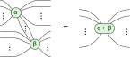
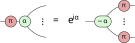
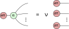
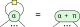
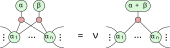
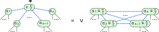

We have now seen a lot of different definitions, rewrites, types of diagrams,
normal forms, gates, etc. Just to help you process it all and give you an easy
reference to look back at, the following pages summarise many of the
building blocks that we have built up, and that we will use in the following
chapters.
In these cheatsheets, we will use
as generic parameters, so that the equation holds regardless of the value of
and
. We will
use
as Boolean variables, specifically in the context of a phase like
that can be
either 0 or .
If we have an equation between diagrams, then interchanging the types of spiders (Z
and X), swapping inputs with outputs or negating all the phases on both sides of the
equation, results in a new equation that still holds. For some of these equations we
write
instead of
to denote that the both sides of the equation are only equal up to some known
non-zero scalar value.
Note that we also include here some rules and references that will be
explained in the following chapters. We have already included them here so that
everything is in the same place.
8.1 ZX-calculus cheatsheets
8.1.1 Generators and their matrices
8.1.2 Basic Rewrite rules
Name
Rewrite rule
Description
Spider fusion

Adjacent spiders of the same
colour fuse and their phases
add
Identity removal
A phasefree spider of arity 2
can be removed.
Hadamard-cancellation
Two Hadamard gates in a row
cancel each other.
commutation

A
phase copies through a spider
of the opposite colour and
flips its phase.
State copy

Copies a computational
basis state,
or
,
through a spider.
Colour change
The two spiders are related
to each other by Hadamard
gates. Can also be seen
as a rule for commuting a
Hadamard gate through a
spider.
Strong
complementarity
An adjacent pair of phase-free
Z- and
X-spiders can be commuted
past one another at the cost of
potentially introducing many
more spiders.
Complementarity
When spiders of opposite
colour are connected by more
than one wire, we can remove
those excess wires pairwise.
Table 8.1: The basic rewrite rules of the ZX-calculus, with their names and
a description of how to apply them.
8.1.3 Derived rewrite rules
Name
Rewrite rule
Description
Hadamard
self-loop removal

A Hadamard gate
connected twice to the
same spider is absorbed
by introducing a
phase. Cf. (3.82).
Hopf for
Hadamard edges
Spiders of the same
type connected multiple
times
via a Hadamard-edge
disconnect.
Cf. Lemma 5.1.5.
Y-state identity
Relates two ways of
writing
the Pauli Y eigenstates.
Cf. Exercise 3.15.
Phase gadget
fusion

Two phase gadgets
connected to the
same set of spiders fuse
together. Cf. (7.13).
Local complementation

A
spider can be removed
by complementing the
connectivity
amongst its neighbours.
Cf. Lemma 5.2.9.
Table 8.2: Some of the useful derived rewrite rules for ZX-diagrams we have
encountered in this book, with their names and a description of how to apply
them.
8.1.4 ZX-calculus full cheatsheet
The following rewrite rules hold for all
and
.
8.2 Circuits and normal forms
8.2.1 Unitaries
Name
Diagram
Matrix
identity
Pauli Z
Pauli X NOT gate
Pauli Y
Hadamard gate
S gate
V gate
T gate
CNOT gate CX gate
CZ gate
Table 8.3: List of common quantum gates and their ZX representation.
8.2.2 Circuit identities
The following circuit identities among X, Z, S, V, H, CNOT, CZ gates and phase
gadgets hold (up to global non-zero scalar).
8.3 Normal forms and types of diagrams
Below we list a number of different forms of diagrams we use throughout this
book. These are usually the result of taking some type of general diagram, and
then applying an algorithm to them to reduce them to a more standardised
form.
Table 8.4: Different types of restrictions on phases in diagrams.
Type
Description
Reference
Two-coloured
No Hadamards and parallel edges, and Z-spiders
are only connected to X-spiders and vice
versa. Achieved by decomposing Hadamards
and fusing all spiders you can.
No X-spiders and parallel edges, and Z-spiders
are only connected to each other via Hadamard
edges. A spider is connected to at most one input
or output wire.
A circuit that consists of a series of Pauli
exponentials, followed by a Clifford circuit.
Any universal circuit can be compiled to Pauli
exponential form.